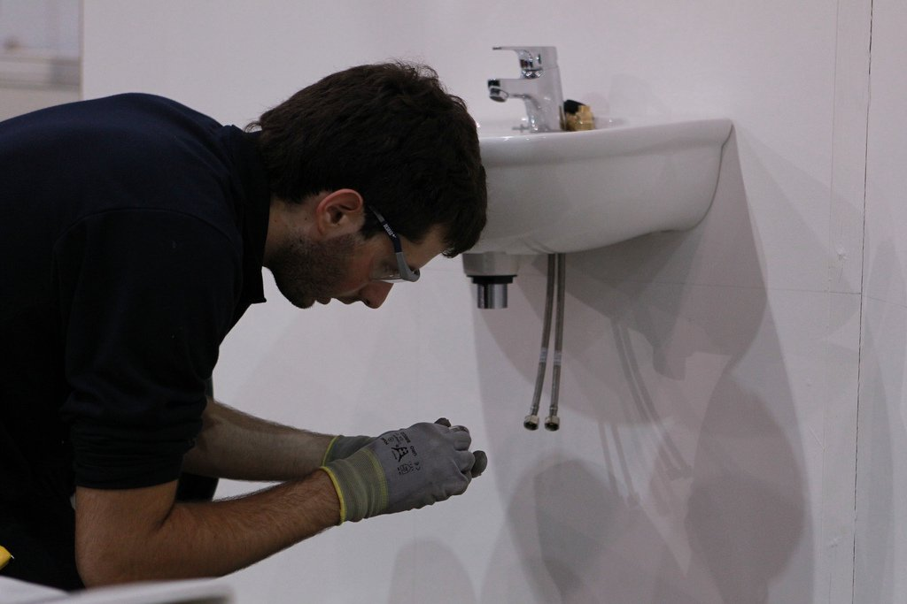

¿Le gustaría saber más?
- No dude en contactar con nuestro experto.
- Lorenzo@fpmislata.com

¿Le gustaría saber más?
Contempla la planificación, diseño y construcción de un sitio web.
Es una especialidad que supone la instalación de los diferentes componentes que conforman el sistema de tuberías de agua, calefacción, desagüe, sanitarios en domicilios particulares, edificios y locales industriales. Incluye instalaciones de tuberías de gas natural, manufacturado, GLPs y aire comprimido.
Es importante, en esta especialidad, el empleo de nuevas tecnologías, relacionada con los procesos de soldadura, manipulación mecánica, calefacción, energías renovables y por supuesto el suministro de agua potable, como una de las piedras angulares en la construcción y la reforma de los hogares.
Siempre de acuerdo con los reglamentos y normas establecidas, siguiendo los protocolos de calidad, de seguridad y de prevención de riesgos laborales y respeto a las normas medioambientales.
Ciclos formativos relacionados
Aplicaciones
Su aplicación se extiende tanto al ámbito público como al privado
y a todos los sectores productivos.
Las aplicaciones de este sector son muy variadas y múltiples, incluyen la instalación y fijación de los diversos elementos sanitarios, la instalación de componentes y accesorios terminales en sanitarios y calefacción, por ejemplo duchas, lavabos, inodoros, calderas, radiadores y bombas de circulación, así como su mantenimiento, detección de fallos y reparación.
¿Le gustaría saber más?